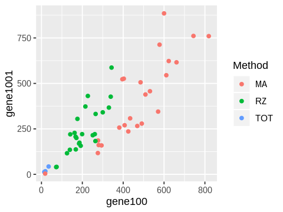
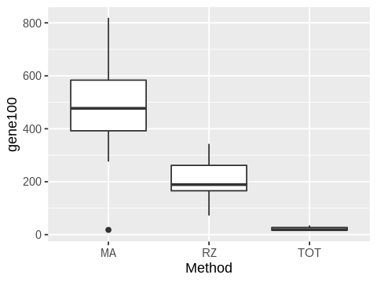
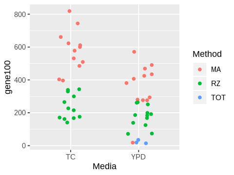
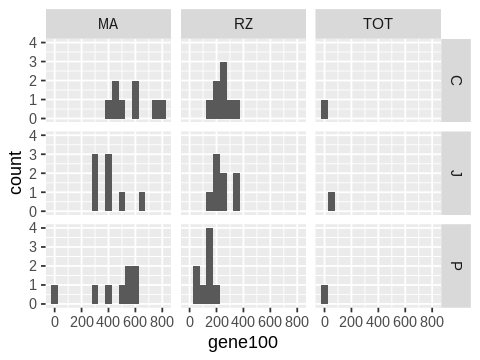
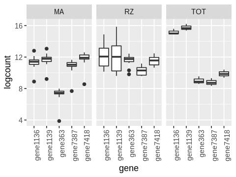

R Graphics Exercise (Solutions)¶
[1]:
library(tidyverse)
Registered S3 methods overwritten by 'ggplot2':
method from
[.quosures rlang
c.quosures rlang
print.quosures rlang
── Attaching packages ─────────────────────────────────────── tidyverse 1.2.1 ──
✔ ggplot2 3.1.1 ✔ purrr 0.3.2
✔ tibble 2.1.2 ✔ dplyr 0.8.1
✔ tidyr 0.8.3 ✔ stringr 1.4.0
✔ readr 1.3.1 ✔ forcats 0.4.0
── Conflicts ────────────────────────────────────────── tidyverse_conflicts() ──
✖ dplyr::filter() masks stats::filter()
✖ dplyr::lag() masks stats::lag()
[2]:
options(repr.plot.width=4, repr.plot.height=3)
[3]:
data <- read_tsv('data/gene_counts_raw.txt')
Parsed with column specification:
cols(
.default = col_double(),
Label = col_character(),
Media = col_character(),
Strain = col_character()
)
See spec(...) for full column specifications.
0. The Label column has 3 pieces of information Sample, Method andd Person in a single cell. Fix this and save the tidy DataFrame as df.
[4]:
data[1:3, 1:5]
| Label | Media | Strain | gene0 | gene1 |
|---|---|---|---|---|
| <chr> | <chr> | <chr> | <dbl> | <dbl> |
| 1_MA_J | YPD | H99 | 1 | 0 |
| 1_RZ_J | YPD | H99 | 0 | 0 |
| 2_MA_C | YPD | H99 | 0 | 0 |
[5]:
n <- ncol(data)
data[1:3, (n-4):n]
| gene995 | gene996 | gene997 | gene998 | gene999 |
|---|---|---|---|---|
| <dbl> | <dbl> | <dbl> | <dbl> | <dbl> |
| 27 | 325 | 637 | 591 | 848 |
| 7 | 227 | 508 | 345 | 641 |
| 31 | 295 | 737 | 738 | 1006 |
[6]:
data %>%
separate(Label, sep='_', into=c("Sample", "Method", "Person")) %>%
select(1:5) %>%
head(3)
| Sample | Method | Person | Media | Strain |
|---|---|---|---|---|
| <chr> | <chr> | <chr> | <chr> | <chr> |
| 1 | MA | J | YPD | H99 |
| 1 | RZ | J | YPD | H99 |
| 2 | MA | C | YPD | H99 |
[7]:
data %>%
separate(Label, sep='_', into=c("Sample", "Method", "Person")) -> df
[8]:
df %>%
select(1:8) %>%
head
| Sample | Method | Person | Media | Strain | gene0 | gene1 | gene10 |
|---|---|---|---|---|---|---|---|
| <chr> | <chr> | <chr> | <chr> | <chr> | <dbl> | <dbl> | <dbl> |
| 1 | MA | J | YPD | H99 | 1 | 0 | 13 |
| 1 | RZ | J | YPD | H99 | 0 | 0 | 14 |
| 2 | MA | C | YPD | H99 | 0 | 0 | 10 |
| 2 | RZ | C | YPD | H99 | 10 | 0 | 18 |
| 2 | TOT | C | YPD | H99 | 1 | 0 | 0 |
| 3 | MA | J | YPD | H99 | 0 | 0 | 8 |
1. Plot a scatter plot of gene100 against gene 1001. Color points by the method used. Save the image as a PNG file ‘fig1.png’ in the ‘figs’ folder.
[9]:
ggplot(df, aes(x=gene100, y=gene1001, color=Method)) +
geom_point()
ggsave('figs/fig1.png')
Saving 6.67 x 6.67 in image

2. Make a boxplot plot of gene100 counts by method.
[11]:
ggplot(df, aes(x=Method, y=gene100)) +
geom_boxplot()
ggsave('figs/fig2.png')
Saving 6.67 x 6.67 in image

3. Make a jitter plot of gene100 counts by Media and color the points by method. Set the jitter width to be 0.2.
[13]:
ggplot(df, aes(x=Media, y=gene100, color=Method)) +
geom_jitter(width=0.2)
ggsave('figs/fig3.png')
Saving 6.67 x 6.67 in image

4. Make a grid of histograms of counts for gene100, with rows showing the person and columns showing the method used.
[16]:
ggplot(df, aes(x=gene100)) +
facet_grid(Person ~ Method) +
geom_histogram(binwidth=50)
ggsave('figs/fig4.png')
Saving 6.67 x 6.67 in image

5. Make a row of boxplots of log counts of the top 5 genes where each column shows a different method.
Warning: This involves quite a bit of data processing.
[17]:
genes.top5 <- df %>%
select(starts_with('gene')) %>%
summarize_all(mean) %>%
gather() %>%
arrange(desc(value)) %>%
head(5)
[18]:
genes.top5
| key | value |
|---|---|
| <chr> | <dbl> |
| gene1139 | 884531.49 |
| gene1136 | 484816.47 |
| gene7418 | 132744.71 |
| gene363 | 62325.08 |
| gene7387 | 45986.86 |
[19]:
genes.top5$key
- 'gene1139'
- 'gene1136'
- 'gene7418'
- 'gene363'
- 'gene7387'
[22]:
df %>%
select(c('Method', genes.top5$key)) %>%
gather(gene, count, -Method) %>%
mutate(logcount = log(count)) %>%
ggplot(aes(x=gene, y=logcount)) +
geom_boxplot() +
facet_wrap(~ Method) +
theme(axis.text.x = element_text(angle = 90, hjust = 1))
ggsave('figs/fig5.png')
Saving 6.67 x 6.67 in image

[ ]: